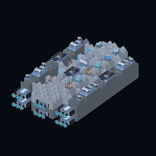
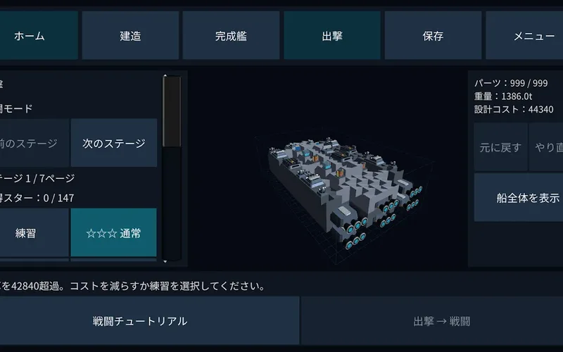
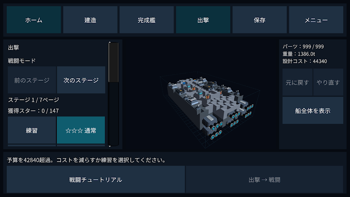
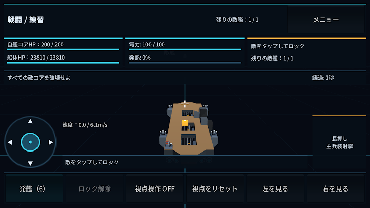
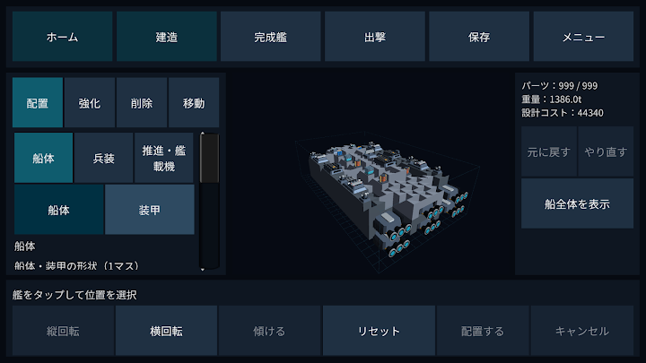
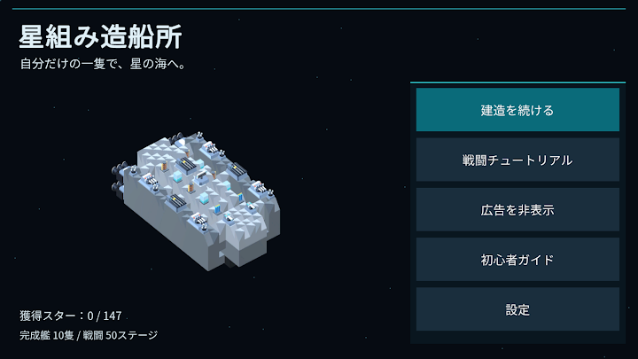
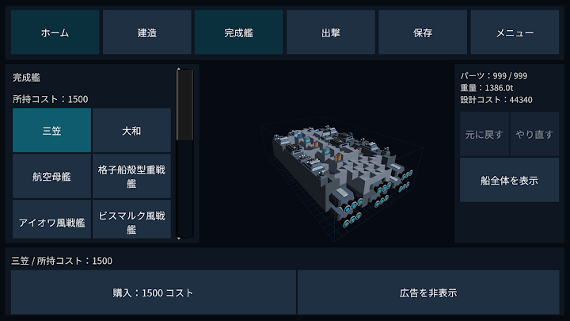

星組み造船所
3D造船・戦闘3D ship building & combat船体・エンジン・主砲を組み合わせて宇宙船を建造し、自分の艦で戦う3D造船・戦闘ゲーム。全50ステージ。Build a starship from hulls, engines and guns, then fly it into battle. A 3D ship-building game with 50 stages.

スクリーンショットScreenshots





プレイ動画Gameplay video
星組み造船所 はどんなゲーム?What is 星組み造船所?
組み上げた艦で、宇宙へ。
「星組み造船所」は、パーツを組み合わせて宇宙船をつくり、自分の艦で戦う3D造船・戦闘ゲームです。
つくる・動かす・改造する
船体、エンジン、主砲、レーザー、ミサイル、発電機などを組み合わせて建造。配置したパーツは移動・強化・削除でき、設計を保存して改造を重ねられます。
50のステージに挑戦
練習を含む50ステージを収録。敵の撃破だけでなく、護衛、防衛、突破などの任務に挑戦します。操艦しながら敵をロックし、武装や艦載機を使い分けましょう。
完成艦から始める
10種類の完成艦を用意。999個のパーツを使った超大型艦も登場します。完成艦を入手して、自分好みに改造できます。
初めてでも練習できる
貸出艦で操作を学べる戦闘チュートリアルと、造船の初心者ガイドを収録。日本語、英語、韓国語、簡体字中国語に対応しています。
本ゲームには広告と、任意の買い切り商品「広告削除」が含まれます。コストの有料販売はありません。ゲームで得たコストで完成艦を入手し、武装研究にはコストと戦闘で得る資材を使います。所持コストと出撃時の建造予算は別の仕組みです。
設計・進行・コストは端末に保存します。広告削除は購入時と同じGoogle Playアカウントで復元できますが、ゲームの保存データを復元する機能ではありません。購入・復元・広告には通信が必要です。確認済みの広告削除はオフラインでも維持されます。18歳未満・年齢未回答では購入しなくても広告は表示されません。
公開者：STEAM BASE
お問い合わせ：steam.base777@gmail.com
こんな方におすすめ
- 宇宙船や戦艦を一から組み立てるクラフトゲームが好き
- 作った艦を自分で操縦して戦いたい
- SFメカ、艦隊戦の世界観が好き
- 設計を保存して、何度も改造を重ねたい
Take your own creation into space.
Hoshigumi Shipyard is a 3D ship-building and combat game. Assemble parts, refine your design and take command of your own spaceship.
BUILD AND REFIT
Combine hulls, engines, main guns, lasers, missiles, generators and more. Move, upgrade or remove placed parts, save your design and keep improving it.
50 STAGES
Play 50 stages, including practice, with elimination, escort, defense and breakthrough missions. Steer your ship, lock onto enemies and use weapons and carrier aircraft.
10 COMPLETED SHIPS
Start from a completed design and make it your own. The catalogue includes a massive ship built with 999 parts.
LEARN TO COMMAND
A battle tutorial provides a loan ship, while the beginner guide explains construction. Japanese, English, Korean and Simplified Chinese are supported.
Contains ads and an optional one-time Remove ads purchase. Credits are earned through gameplay and are not sold. Use earned credits for completed ships, and credits plus battle materials for weapon research. Credits and the reusable construction budget are separate systems.
Designs, progress and credits are stored on your device. Restore Remove ads with the same Google Play account used to buy it; this does not restore saved game data. Purchases, restoration and ads require internet access. A verified ad-removal entitlement remains available offline. Under-18 players and players who have not provided an adult age choice already play without ads.
Publisher: STEAM BASE
Support: steam.base777@gmail.com
よくある質問FAQ
無料で遊べますか?Is it free?
無料で遊べます。広告と、任意の買い切り「広告削除」があります。コストの有料販売はありません。Yes. It has ads and an optional one-time “Remove ads” purchase. In-game cost is never sold.
初めてでも遊べますか?Is it beginner-friendly?
貸出艦で操作を学べる戦闘チュートリアルと、造船の初心者ガイドがあります。10種類の完成艦から始めることもできます。There is a combat tutorial with a loaner ship and a ship-building guide, and you can start from 10 ready-made ships.
どんな言語に対応していますか?Which languages?
日本語・英語・韓国語・簡体字中国語です。Japanese, English, Korean and Simplified Chinese.
iPhone（iOS）でも遊べますか?Is it on iPhone (iOS)?
現在は Android 版（Google Play）のみです。App Store（iOS）では配信していません。Not at the moment — it is only on Android (Google Play), not on the App Store.